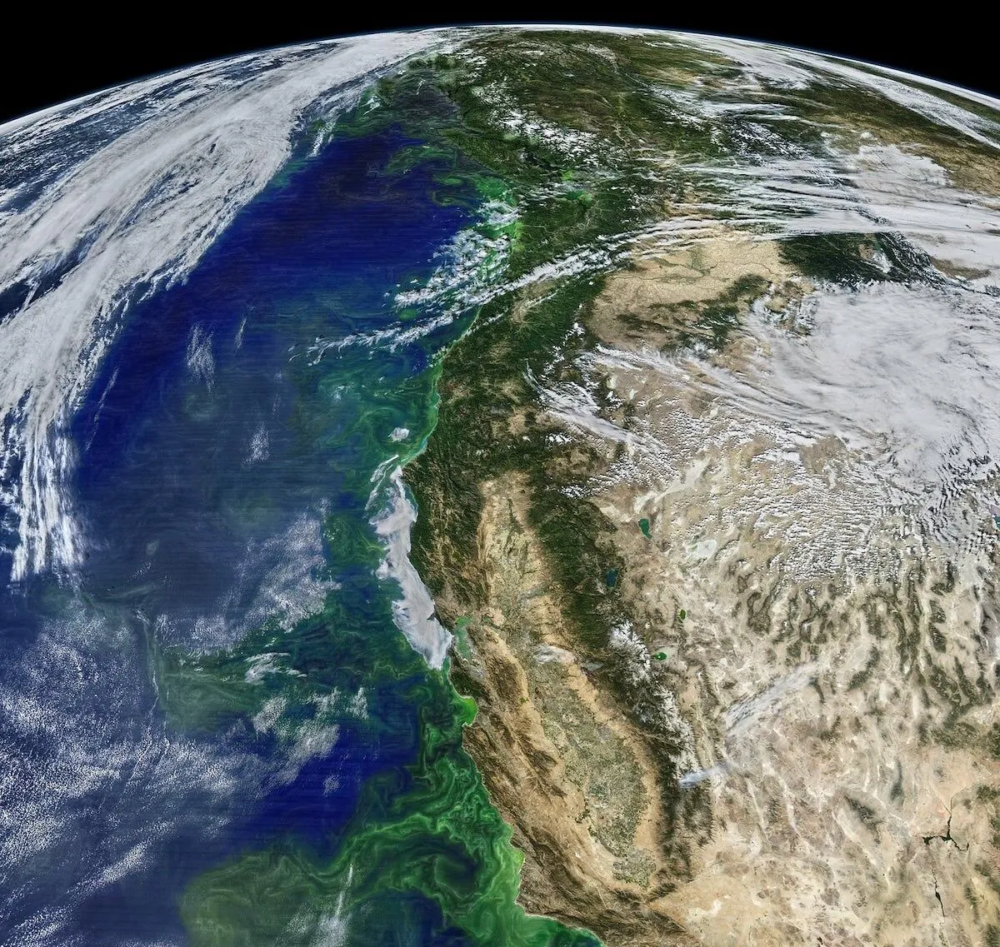

Resources
The EcoWatch Website. The editors at EcoWatch, 2023, ecowatch.com. Accessed 3 Oct. 2023.
The Pexels Website. The creators at Pexels, 2023, pexels.com/search/corporate/. Accessed 3 Oct. 2023.
The EcoWatch Website. The editors at EcoWatch, 2023, ecowatch.com. Accessed 3 Oct. 2023.
The Pexels Website. The creators at Pexels, 2023, pexels.com/search/corporate/. Accessed 3 Oct. 2023.